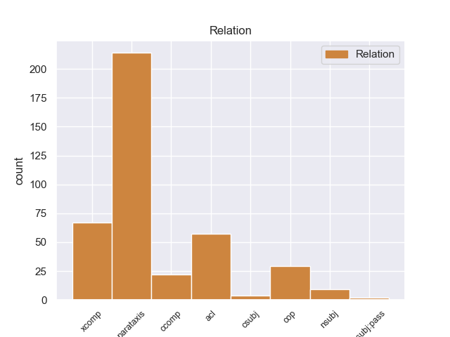
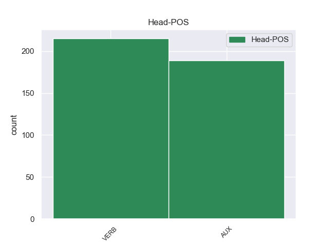
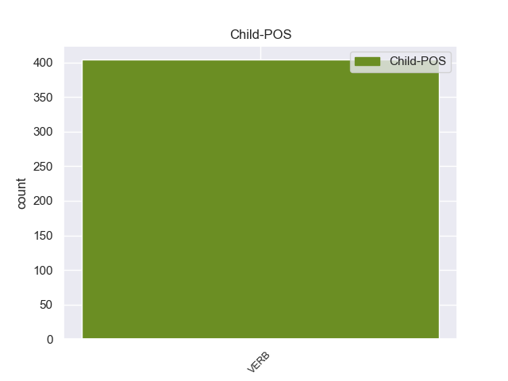

Distribution of features within this leaf



Agreement Rules sorted by frequency.
- When the dependent token is the conjunct(conj) of the head token, and the head token is AUX and the dependent token is AUX.
1 L’ _ _ _ _ 0 _ _ _
2 oro _ _ _ _ 0 _ _ _
3 è essere AUX -- Mood=Ind|Number=Sing|Person=3|Tense=Pres|VerbForm=Fin 0 _ _ _
4 un _ _ _ _ 0 _ _ _
5 metallo _ _ _ _ 0 _ _ _
6 prezioso _ _ _ _ 0 _ _ _
7 , _ _ _ _ 0 _ _ _
8 l’ _ _ _ _ 0 _ _ _
9 incenso _ _ _ _ 0 _ _ _
10 e _ _ _ _ 0 _ _ _
11 la _ _ _ _ 0 _ _ _
12 mirra _ _ _ _ 0 _ _ _
13 sono essere AUX -- Mood=Ind|Number=Plur|Person=3|Tense=Pres|VerbForm=Fin 3 conj _ _
14 sostanze _ _ _ _ 0 _ _ _
15 profumate _ _ _ _ 0 _ _ _
16 . _ _ _ _ 0 _ _ _
1 Il _ _ _ _ 0 _ _ _
2 centro _ _ _ _ 0 _ _ _
3 storico _ _ _ _ 0 _ _ _
4 era essere AUX -- Mood=Ind|Number=Sing|Person=3|Tense=Imp|VerbForm=Fin 0 _ _ _
5 la _ _ _ _ 0 _ _ _
6 parte _ _ _ _ 0 _ _ _
7 più _ _ _ _ 0 _ _ _
8 antica _ _ _ _ 0 _ _ _
9 di _ _ _ _ 0 _ _ _
10 Bam _ _ _ _ 0 _ _ _
11 che _ _ _ _ 0 _ _ _
12 era essere AUX -- Mood=Ind|Number=Sing|Person=3|Tense=Imp|VerbForm=Fin 4 acl:relcl _ _
13 patrimonio _ _ _ _ 0 _ _ _
14 artistico _ _ _ _ 0 _ _ _
15 di _ _ _ _ 0 _ _ _
16 tutta _ _ _ _ 0 _ _ _
17 l’ _ _ _ _ 0 _ _ _
18 umanità _ _ _ _ 0 _ _ _
19 . _ _ _ _ 0 _ _ _
1 La _ _ _ _ 0 _ _ _
2 capitale _ _ _ _ 0 _ _ _
3 di _ _ _ _ 0 _ _ _
4 Haiti _ _ _ _ 0 _ _ _
5 è essere AUX -- Mood=Ind|Number=Sing|Person=3|Tense=Pres|VerbForm=Fin 0 _ _ _
6 Port-au-Prince _ _ _ _ 0 _ _ _
7 Haiti _ _ _ _ 0 _ _ _
8 è essere AUX -- Mood=Ind|Number=Sing|Person=3|Tense=Pres|VerbForm=Fin 5 parataxis _ _
9 uno _ _ _ _ 0 _ _ _
10 di _ _ _ _ 0 _ _ _
11 i _ _ _ _ 0 _ _ _
12 paesi _ _ _ _ 0 _ _ _
13 più _ _ _ _ 0 _ _ _
14 poveri _ _ _ _ 0 _ _ _
15 di _ _ _ _ 0 _ _ _
16 il _ _ _ _ 0 _ _ _
17 mondo _ _ _ _ 0 _ _ _
18 : _ _ _ _ 0 _ _ _
1 La _ _ _ _ 0 _ _ _
2 rabbia _ _ _ _ 0 _ _ _
3 di _ _ _ _ 0 _ _ _
4 i _ _ _ _ 0 _ _ _
5 kosovari _ _ _ _ 0 _ _ _
6 non _ _ _ _ 0 _ _ _
7 può potere AUX -- Mood=Ind|Number=Sing|Person=3|Tense=Pres|VerbForm=Fin 24 nsubj _ _
8 essere _ _ _ _ 0 _ _ _
9 incanalata _ _ _ _ 0 _ _ _
10 in _ _ _ _ 0 _ _ _
11 un _ _ _ _ 0 _ _ _
12 ambito _ _ _ _ 0 _ _ _
13 istituzionale _ _ _ _ 0 _ _ _
14 , _ _ _ _ 0 _ _ _
15 allora _ _ _ _ 0 _ _ _
16 cercano _ _ _ _ 0 _ _ _
17 di _ _ _ _ 0 _ _ _
18 esprimer _ _ _ _ 0 _ _ _
19 si _ _ _ _ 0 _ _ _
20 in _ _ _ _ 0 _ _ _
21 modo _ _ _ _ 0 _ _ _
22 diverso _ _ _ _ 0 _ _ _
23 , _ _ _ _ 0 _ _ _
24 è essere AUX -- Mood=Ind|Number=Sing|Person=3|Tense=Pres|VerbForm=Fin 0 _ _ _
25 l' _ _ _ _ 0 _ _ _
26 opinione _ _ _ _ 0 _ _ _
27 prudente _ _ _ _ 0 _ _ _
28 di _ _ _ _ 0 _ _ _
29 il _ _ _ _ 0 _ _ _
30 rivale _ _ _ _ 0 _ _ _
31 di _ _ _ _ 0 _ _ _
32 Rugova _ _ _ _ 0 _ _ _
33 , _ _ _ _ 0 _ _ _
34 Adem _ _ _ _ 0 _ _ _
35 Demaci _ _ _ _ 0 _ _ _
36 , _ _ _ _ 0 _ _ _
37 capo _ _ _ _ 0 _ _ _
38 di _ _ _ _ 0 _ _ _
39 il _ _ _ _ 0 _ _ _
40 partito _ _ _ _ 0 _ _ _
41 parlamentare _ _ _ _ 0 _ _ _
42 ( _ _ _ _ 0 _ _ _
43 Ppk _ _ _ _ 0 _ _ _
44 ) _ _ _ _ 0 _ _ _
45 , _ _ _ _ 0 _ _ _
46 contrario _ _ _ _ 0 _ _ _
47 a _ _ _ _ 0 _ _ _
48 una _ _ _ _ 0 _ _ _
49 guerra _ _ _ _ 0 _ _ _
50 aperta _ _ _ _ 0 _ _ _
51 contro _ _ _ _ 0 _ _ _
52 Belgrado _ _ _ _ 0 _ _ _
53 , _ _ _ _ 0 _ _ _
54 ma _ _ _ _ 0 _ _ _
55 anche _ _ _ _ 0 _ _ _
56 a _ _ _ _ 0 _ _ _
57 una _ _ _ _ 0 _ _ _
58 politica _ _ _ _ 0 _ _ _
59 passiva _ _ _ _ 0 _ _ _
60 che _ _ _ _ 0 _ _ _
61 porta _ _ _ _ 0 _ _ _
62 diritto _ _ _ _ 0 _ _ _
63 a _ _ _ _ 0 _ _ _
64 la _ _ _ _ 0 _ _ _
65 capitolazione _ _ _ _ 0 _ _ _
66 . _ _ _ _ 0 _ _ _
1 A _ _ _ _ 0 _ _ _
2 San _ _ _ _ 0 _ _ _
3 Pasquale _ _ _ _ 0 _ _ _
4 aspettavano _ _ _ _ 0 _ _ _
5 il _ _ _ _ 0 _ _ _
6 delegato _ _ _ _ 0 _ _ _
7 di _ _ _ _ 0 _ _ _
8 monsignore _ _ _ _ 0 _ _ _
9 , _ _ _ _ 0 _ _ _
10 il _ _ _ _ 0 _ _ _
11 quale _ _ _ _ 0 _ _ _
12 era essere AUX -- Mood=Ind|Number=Sing|Person=3|Tense=Imp|VerbForm=Fin 0 _ _ _
13 un _ _ _ _ 0 _ _ _
14 uomo _ _ _ _ 0 _ _ _
15 di _ _ _ _ 0 _ _ _
16 proposito _ _ _ _ 0 _ _ _
17 , _ _ _ _ 0 _ _ _
18 che _ _ _ _ 0 _ _ _
19 ci _ _ _ _ 0 _ _ _
20 aveva _ _ _ _ 0 _ _ _
21 due _ _ _ _ 0 _ _ _
22 fibbie _ _ _ _ 0 _ _ _
23 d' _ _ _ _ 0 _ _ _
24 argento _ _ _ _ 0 _ _ _
25 di _ _ _ _ 0 _ _ _
26 mezza _ _ _ _ 0 _ _ _
27 libra _ _ _ _ 0 _ _ _
28 l' _ _ _ _ 0 _ _ _
29 una _ _ _ _ 0 _ _ _
30 a _ _ _ _ 0 _ _ _
31 le _ _ _ _ 0 _ _ _
32 scarpe _ _ _ _ 0 _ _ _
33 , _ _ _ _ 0 _ _ _
34 chi _ _ _ _ 0 _ _ _
35 l' _ _ _ _ 0 _ _ _
36 aveva avere AUX -- Mood=Ind|Number=Sing|Person=3|Tense=Imp|VerbForm=Fin 12 acl _ _
37 visto _ _ _ _ 0 _ _ _
38 , _ _ _ _ 0 _ _ _
39 e _ _ _ _ 0 _ _ _
40 veniva _ _ _ _ 0 _ _ _
41 a _ _ _ _ 0 _ _ _
42 portare _ _ _ _ 0 _ _ _
43 la _ _ _ _ 0 _ _ _
44 mozzetta _ _ _ _ 0 _ _ _
45 a _ _ _ _ 0 _ _ _
46 i _ _ _ _ 0 _ _ _
47 canonici _ _ _ _ 0 _ _ _
48 ; _ _ _ _ 0 _ _ _
Disagree Examples:
1 Il _ _ _ _ 0 _ _ _
2 corazziere _ _ _ _ 0 _ _ _
3 è _ _ _ _ 0 _ _ _
4 stato essere AUX -- Gender=Masc|Number=Sing|Tense=Past|VerbForm=Part 0 _ _ _
5 individuato _ _ _ _ 0 _ _ _
6 ma _ _ _ _ 0 _ _ _
7 il _ _ _ _ 0 _ _ _
8 suo _ _ _ _ 0 _ _ _
9 nome _ _ _ _ 0 _ _ _
10 è essere AUX -- Mood=Ind|Number=Sing|Person=3|Tense=Pres|VerbForm=Fin 4 conj _ _
11 " _ _ _ _ 0 _ _ _
12 top _ _ _ _ 0 _ _ _
13 secret _ _ _ _ 0 _ _ _
14 " _ _ _ _ 0 _ _ _
15 . _ _ _ _ 0 _ _ _
1 Una _ _ _ _ 0 _ _ _
2 prima _ _ _ _ 0 _ _ _
3 segnalazione _ _ _ _ 0 _ _ _
4 è _ _ _ _ 0 _ _ _
5 stata essere AUX -- Gender=Fem|Number=Sing|Tense=Past|VerbForm=Part 0 _ _ _
6 inviata _ _ _ _ 0 _ _ _
7 a _ _ _ _ 0 _ _ _
8 la _ _ _ _ 0 _ _ _
9 Procura _ _ _ _ 0 _ _ _
10 di _ _ _ _ 0 _ _ _
11 la _ _ _ _ 0 _ _ _
12 Repubblica _ _ _ _ 0 _ _ _
13 , _ _ _ _ 0 _ _ _
14 poi _ _ _ _ 0 _ _ _
15 il _ _ _ _ 0 _ _ _
16 caso _ _ _ _ 0 _ _ _
17 è essere AUX -- Mood=Ind|Number=Sing|Person=3|Tense=Pres|VerbForm=Fin 5 conj _ _
18 passato _ _ _ _ 0 _ _ _
19 in _ _ _ _ 0 _ _ _
20 le _ _ _ _ 0 _ _ _
21 mani _ _ _ _ 0 _ _ _
22 di _ _ _ _ 0 _ _ _
23 il _ _ _ _ 0 _ _ _
24 giudici _ _ _ _ 0 _ _ _
25 di _ _ _ _ 0 _ _ _
26 viale _ _ _ _ 0 _ _ _
27 di _ _ _ _ 0 _ _ _
28 le _ _ _ _ 0 _ _ _
29 Milizie _ _ _ _ 0 _ _ _
30 . _ _ _ _ 0 _ _ _
1 Erano essere AUX -- Mood=Ind|Number=Plur|Person=3|Tense=Imp|VerbForm=Fin 0 _ _ _
2 slegati _ _ _ _ 0 _ _ _
3 e _ _ _ _ 0 _ _ _
4 la _ _ _ _ 0 _ _ _
5 cosa _ _ _ _ 0 _ _ _
6 è essere AUX -- Mood=Ind|Number=Sing|Person=3|Tense=Pres|VerbForm=Fin 1 conj _ _
7 stata _ _ _ _ 0 _ _ _
8 loro _ _ _ _ 0 _ _ _
9 fatale _ _ _ _ 0 _ _ _
10 . _ _ _ _ 0 _ _ _
1 È _ _ _ _ 0 _ _ _
2 stato essere AUX -- Gender=Masc|Number=Sing|Tense=Past|VerbForm=Part 0 _ _ _
3 facile _ _ _ _ 0 _ _ _
4 ricostruire _ _ _ _ 0 _ _ _
5 le _ _ _ _ 0 _ _ _
6 telefonate _ _ _ _ 0 _ _ _
7 in _ _ _ _ 0 _ _ _
8 partenza _ _ _ _ 0 _ _ _
9 da _ _ _ _ 0 _ _ _
10 il _ _ _ _ 0 _ _ _
11 " _ _ _ _ 0 _ _ _
12 portatile _ _ _ _ 0 _ _ _
13 " _ _ _ _ 0 _ _ _
14 ed _ _ _ _ 0 _ _ _
15 è essere AUX -- Mood=Ind|Number=Sing|Person=3|Tense=Pres|VerbForm=Fin 2 conj _ _
16 subito _ _ _ _ 0 _ _ _
17 stato _ _ _ _ 0 _ _ _
18 chiaro _ _ _ _ 0 _ _ _
19 che _ _ _ _ 0 _ _ _
20 il _ _ _ _ 0 _ _ _
21 carabiniere _ _ _ _ 0 _ _ _
22 addetto _ _ _ _ 0 _ _ _
23 a _ _ _ _ 0 _ _ _
24 la _ _ _ _ 0 _ _ _
25 sicurezza _ _ _ _ 0 _ _ _
26 di _ _ _ _ 0 _ _ _
27 il _ _ _ _ 0 _ _ _
28 presidente _ _ _ _ 0 _ _ _
29 era _ _ _ _ 0 _ _ _
30 anche _ _ _ _ 0 _ _ _
31 colui _ _ _ _ 0 _ _ _
32 che _ _ _ _ 0 _ _ _
33 aveva _ _ _ _ 0 _ _ _
34 a _ _ _ _ 0 _ _ _
35 lungo _ _ _ _ 0 _ _ _
36 inveito _ _ _ _ 0 _ _ _
37 contro _ _ _ _ 0 _ _ _
38 lo _ _ _ _ 0 _ _ _
39 stesso _ _ _ _ 0 _ _ _
40 Scalfaro _ _ _ _ 0 _ _ _
41 e _ _ _ _ 0 _ _ _
42 la _ _ _ _ 0 _ _ _
43 figlia _ _ _ _ 0 _ _ _
44 . _ _ _ _ 0 _ _ _
1 " _ _ _ _ 0 _ _ _
2 Sono _ _ _ _ 0 _ _ _
3 stati essere AUX -- Gender=Masc|Number=Plur|Tense=Past|VerbForm=Part 0 _ _ _
4 derubati _ _ _ _ 0 _ _ _
5 e _ _ _ _ 0 _ _ _
6 poi _ _ _ _ 0 _ _ _
7 uccisi _ _ _ _ 0 _ _ _
8 None _ _ _ _ 0 _ _ _
9 , _ _ _ _ 0 _ _ _
10 ha avere AUX -- Mood=Ind|Number=Sing|Person=3|Tense=Pres|VerbForm=Fin 3 parataxis _ _
11 ribadito _ _ _ _ 0 _ _ _
12 a _ _ _ _ 0 _ _ _
13 il _ _ _ _ 0 _ _ _
14 telefono _ _ _ _ 0 _ _ _
15 da _ _ _ _ 0 _ _ _
16 la _ _ _ _ 0 _ _ _
17 sede _ _ _ _ 0 _ _ _
18 di _ _ _ _ 0 _ _ _
19 Mondo _ _ _ _ 0 _ _ _
20 Giusto _ _ _ _ 0 _ _ _
21 a _ _ _ _ 0 _ _ _
22 Lecco _ _ _ _ 0 _ _ _
23 il _ _ _ _ 0 _ _ _
24 direttore _ _ _ _ 0 _ _ _
25 , _ _ _ _ 0 _ _ _
26 Domenico _ _ _ _ 0 _ _ _
27 Colombo _ _ _ _ 0 _ _ _
28 , _ _ _ _ 0 _ _ _
29 che _ _ _ _ 0 _ _ _
30 pure _ _ _ _ 0 _ _ _
31 ha _ _ _ _ 0 _ _ _
32 ammesso _ _ _ _ 0 _ _ _
33 di _ _ _ _ 0 _ _ _
34 non _ _ _ _ 0 _ _ _
35 essere _ _ _ _ 0 _ _ _
36 in _ _ _ _ 0 _ _ _
37 possesso _ _ _ _ 0 _ _ _
38 di _ _ _ _ 0 _ _ _
39 maggiori _ _ _ _ 0 _ _ _
40 dettagli _ _ _ _ 0 _ _ _
41 . _ _ _ _ 0 _ _ _